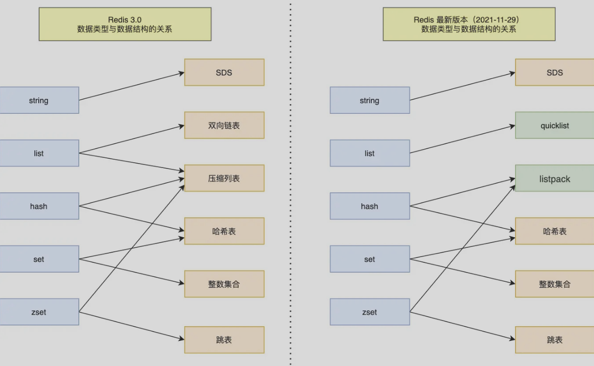
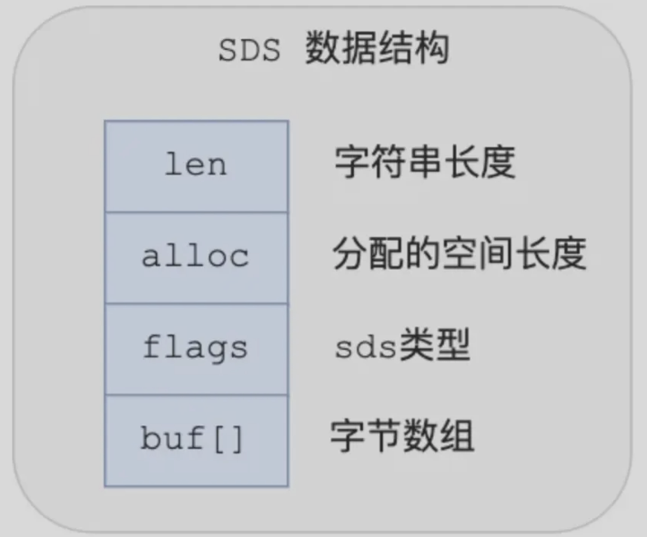
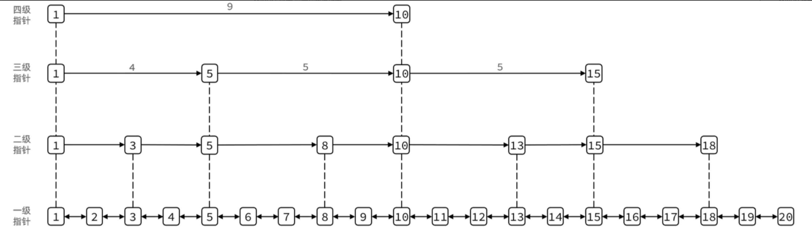
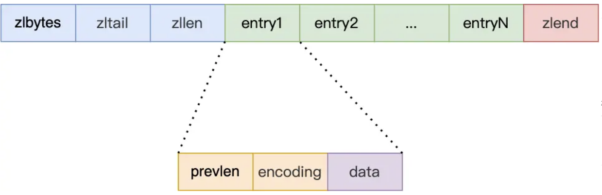
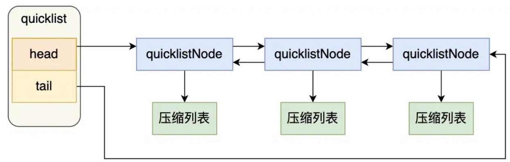
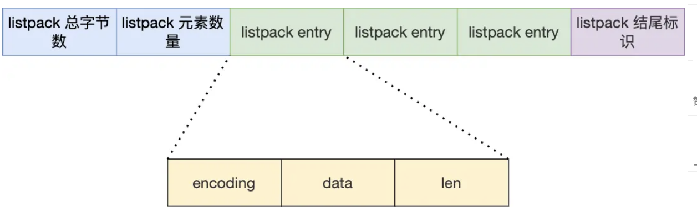
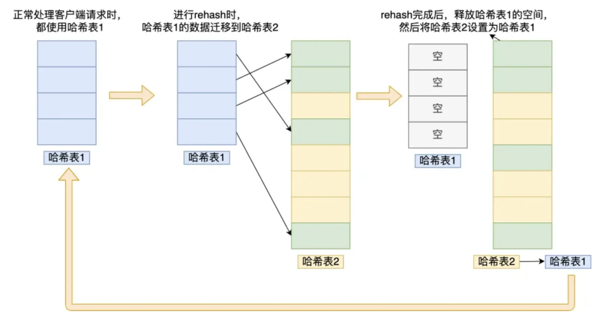

Redis-数据结构

数据类型
总览
注：压缩列表后续都被listpack替代
| 类型 | 用途 | 描述 |
|---|---|---|
| **String（字符串）**可存储字符串、整数或浮点数 | 计数器 分布式锁 存储序列化对象 |
int（如果存的全数字）、SDS 简单动态字符串；最大可以容纳512MB |
| **Hash（哈希）**可存储多个键值对 | 缓存对象 | zipList 压缩列表（连续占用内存，因此存储的元素不能太多）一旦元素存储太多，会转为 Dict 哈希表 元素小于512且每个元素小于64字节使用压缩列表，否则哈希表 Redis 7.0 引入了 listpack 取代 zipList 压缩列表 |
| **List（列表）**可重复、（插入和取出）有序 | 朋友圈点赞 / 评论列表 | quickList 快速列表：一种双向链表，每个节点是一个压缩列表结合了压缩列表和双向链表的优点 redis3.2之前，双向链表和压缩列表实现 |
| **Set（集合）**不可重复，无序，求交集、差集等 | 求共同关注 去重 |
哈希表+整数集合 元素都是整数且元素个数小于 512使用整数集合，否则Dict 哈希表 （Set 是单列集合，Dict 的每个节点是存键值对的，那么其实是只用了键来存元素，值都设为 null） |
| **ZSet（有序集合）**不可重复，每个元素都关联一个分数自动按照分数排序元素 | 排行榜 | 压缩链表+哈希表+跳表 元素数量小于128且每个元素小于64字节使用压缩列表，否则哈希表+跳表 存储两份数据，Dict 和 SkipList 各一份为什么要存储两份数据？因为这是它的特性需求： ・利用 Dict 去键值查询：根据元素查分数 ・利用 SkipList 范围查询（快速跳过大量无关节点，定位范围的起始点）： ◦ 获取指定分数区间的元素 ◦ 获取排名在指定区间的元素 Redis 7.0 引入了 listpack 取代 zipList 压缩列表 |
| **BitMap（位图）**存储二进制位 | 布隆过滤器 用户签到记录 |
底层基于 String 实现，保存二进制字节数组，通过位操作实现位图功能 |
| **HyperLogLog（基数估算）**基数统计 | 网页UV计数统计 | |
| Geo可存储地理位置信息（如经纬度） | 附近的人/地点查询地理位置范围查询 | 直接使用有序集合 |
| Stream（流） | 消息队列 | 完美解决之前消息队列的缺陷： 1、发布订阅模式，不能持久化也就无法可靠的保存消息，并且对于离线重连的客户端不能读取历史消息的缺陷； 2、list实现的消息队列不能重复消费，一个消息被消费之后就会被删除 |
Set和Zset区别
他们都是可以存储多个元素的集合类型，核心区别是在于是否对元素进行排序以及排序方式
- set是无序、唯一集合，适合存储不重复且无序排序的数据，如去重、共同关注等
- zset是有序、唯一集合，每个元素关联一个分数，按照分数从小到大排序，适合需要排序或排名的场景，如排行榜、带权重的任务
数据结构
SDS
针对回答：
- String的底层数据结构是什么？
- 为什么String底层不适用c语言字符串而是用SDS？
SDS数据结构
- len，记录字符串长度，获取字符串长度的时间复杂度是O(1)
- alloc，分配给字符数组的空间长度，修改字符串时通过alloc-len获取剩余长度，如果不满足自动扩容
- flags，表示不同类型的SDS
- buf[]，字符数据，保存实际数据

相比c语言字符串的优势
- 获取长度的时间复杂度是O(1)
- 二进制安全，不需要\0作为字符串结束的标识，因此可以存储二进制数据
- 不会发生缓冲区溢出，有自动扩容机制
跳表
zset底层数据结构
Zset底层数据结构
- 当元素个数小于128，每个元素的值小于64B，使用压缩链表
- 反之 使用跳表
不过，redis7.0使用listpack代替了压缩链表
跳表怎么实现的？
链表在查找元素的时候，逐一查找，时间复杂度是O(N)；因此引入了跳表。
跳表是在链表的基础上改进的，引入了一种多层的有序链表，可以快速定位数据，时间复杂度是O(logN)
跳表结构包含：头节点、跳表长度、跳表最大层数
跳表节点包含：元素值、权重、后向指针、level数据 保存每层上的前向指针和跨度

怎么生成？
（相邻两层节点数量最理想的比例是2：1）
- 跳表在创建节点时，随机生成每一个节点的层数，具体来说就是：
- 创建节点时生成一个[0,1]的随机数
- 如果随机数小于0.25，那么层数+1，继续生成下一个随机数，直到随机数大于0.25
- 层高最大限制为64
怎么查找？
- 从头节点的最高层开始，逐一遍历每一层，遍历某层的节点时会对比跳表节点的数值和权重
- 如果当前节点权重小于查找节点权重，访问该层上的下一个节点
- 如果当前节点权重等于查找节点权重，对比数值，如果数值小于查找的数据，访问该层上的下一个节点
- 如果上面两个条件都不满足或者下一个节点为空，跳表就会跳到当前节点的下一层
为什么使用跳表？
为什么不适用平衡树（AVL树、红黑树）
- 内存占用：平衡树每个节点包含 2 个指针（分别指向左右子树），而跳表每个节点包含的指针数目平均为 1/(1-p)，具体取决于参数 p 的大小。如果像 Redis里的实现一样，取 p=1/4，那么平均每个节点包含 1.33 个指针，比平衡树更有优势。
- 范围查找的支持：在平衡树上，我们找到指定范围的小值之后，还需要以中序遍历的顺序继续寻找其它不超过大值的节点。在平衡树上，我们找到指定范围的小值之后，还需要以中序遍历的顺序继续寻找其它不超过大值的节点
- 实现难易程度：平衡树的插入和删除操作可能引发子树的调整，逻辑复杂，而跳表的插入和删除只需要修改相邻节点的指针，操作简单又快速
对比B+树
- 两者复杂度差不多，但是跳表实现更简单，更适合内存数据库；而B+树的核心优势在于可以减少磁盘IO适合MySQL那种磁盘数据库
压缩链表
为了节省内存开发的，由连续内存块组成的顺序性数据结构

压缩链表结构：
- 整个压缩链表占用字节数
- 压缩列表尾部节点距离起始地址的字节数（列表尾的偏移量）
- 压缩列表节点数
- 压缩列表结束点
查找第一个和最后一个是O(1)，查找其他的就是O(N)
压缩列表节点结构：
- 前一个节点长度
- 当前节点实际数据类型和长度
- 当前节点实际数据
缺陷：存在连锁更新问题，一旦连锁更新发生，就会导致压缩列表占用的内存空间多次重新分配，直接影响访问性能
节点中有个属性存前一个节点的长度，如果前一个节点长度小于254B，那么该属性使用1B；如果大于等于254B，该属性使用5B
连锁更新：新增或修改某个元素时，如果空间不够就需要重新分配，当插入元素较大时，可能导致后续所有元素记录前一个节点长度的字段都发生变化，引起连锁更新
比如，现在所有的元素都是250字节，在第一个节点插入了一个超过254字节的元素，那么后续所有的节点记录前一个节点长度的字段长度都要由1B变为5B
quicklist
quicklist是想要解决压缩列表的不足，采用双向链表+压缩列表的结构，是一个链表，但是链表的每个元素是一个压缩列表；简单来说就是通过控制每个链表节点中压缩列表的大小或者元素个数，来规避连锁更新的（越小就会连锁更新带来的影响就越小

listpack
quicklist是通过控制节点中压缩列表中元素的格式来减少连锁更新带来的性能影响，但是没有完全解决连锁更新问题
listpack就是为了代替压缩列表，最大特点是 listpack 中每个节点不再包含前一个节点的长度了

哈希表
怎么扩容的？
扩容就是rehash的过程，涉及到两个哈希表了
正常的情况下插入的数据都会写入哈希表1，哈希表2并没有被分配空间，随着数据的增多，就要进行扩容，那么触发rehash
- 给哈希表2分配空间，一般就是哈希表1容量×2
- 把哈希表1的数据迁移到哈希表2
- 迁移完成后，哈希表1的空间会被释放，并把哈希表2设置尾哈希表1，然后再哈希表2创建一个空白哈希表，为下次rehash做准备
在步骤2中，如果哈希表数据量非常大，那么迁移就会阻塞，无法服务其他请求，redis采用了渐进rehash解决
-
也就是上面的步骤2，每次哈希表元素的CRUD操作，除了执行对应操作外，还会把哈希表1中索引位置所有的key-value迁移到哈希表2
-
随着请求越来越多，最终某个时间点会把哈希表1中所有数据迁移到哈希表2
删除、查找、更新都会在两个哈希表进行，先在哈希表1查找，找不到再去哈希表2中
新增操作只会在哈希表2中进行

rehash触发条件
和负载因子有关，（已保存节点数量/哈希表大小）
- 如果负载因子大于等于1，并且redis没有执行RDB快照或AOF重新，那么rehash
- 如果负载因子大于等于5，说明哈希冲突非常严重，直接强制进行rehash